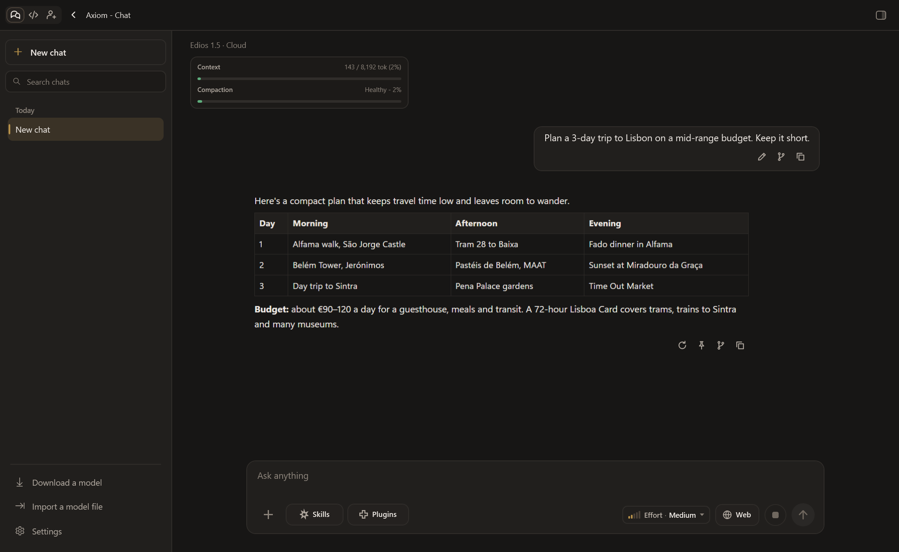

Offline Local GGUF
Runs locally via llama.cpp with automatic CUDA or CPU fallback, hardware RAM/VRAM profiling, and zero per-token fees.
Windows Native · .NET 10 WPF · Local + Cloud
Run GGUF models offline for free, connect a project folder for autonomous Workplace edits with Project Canvas and 1-click Undo, or turn on DeepSeek 4.1F-1017 Cloud for $9/month with no API key setup.

Three first-class execution paths inside one fast desktop shell — keep your files, models, and workflow under your control.
Runs locally via llama.cpp with automatic CUDA or CPU fallback, hardware RAM/VRAM profiling, and zero per-token fees.
Point Axiom at a project folder. Inspect changes line-by-line in Project Canvas, approve safely via Auto-Review, and undo in one click.
1M token context, native vision, and Computer Use backed by $5.25/mo in paced upstream credits with auto-renewal and no BYOK setup.
Every local GGUF feature and Personal OpenRouter BYOK tool stays free. Upgrade only when your hardware wants instant 85 tok/s speed, 1M context, vision, or Computer Use.

Axiom competes by combining a native Windows desktop harness with half-price managed open-weight cloud speed.
| Product | Price | Offline GGUF & BYOK | Windows Folder Agent & Canvas | Included Cloud Engine |
|---|---|---|---|---|
| Axiom Cloud | $9/mo | Yes (Free local + BYOK) | Yes (Workplace + @ComputerUse + 1-click Undo) | $5.25 DeepSeek 4.1F-1017 credits (1M ctx, vision) |
| LM Studio Bionic+ | $20/mo | Yes (Local MLX/GGUF) | No desktop GUI automation or WPF Canvas | Hosted open-weight cloud tier |
| T3 Chat Pro | $8/mo | No (Web only) | No local filesystem or repo tools | Web multi-model chat with 4h limits |
| Cherry Studio / Jan | $0 | Yes (Local + BYOK) | BYOK setup required for cloud agents | None (requires user-managed API billing) |
No. Running GGUF models on your own GPU/CPU, connecting an Ollama/llama.cpp server, or pasting your own OpenRouter key is 100% free forever.
Your $9/month Stripe subscription automatically provisions $5.25 of managed DeepSeek 4.1F-1017 inference credit each month. Pacing gauges reset every 3 hours and 7 days, and monthly renewals activate automatically in Axiom with zero manual token swaps.
No. Axiom is compiled natively with C# and .NET 10 WPF on Windows 10/11 (x64), packaged and code-signed via Azure Artifact Signing Public Trust.
Local chats, documents, settings, and session credentials stay in encrypted DPAPI storage on your Windows PC. Cloud prompts are only sent when you actively invoke a Cloud model or connected tool.